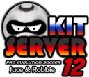
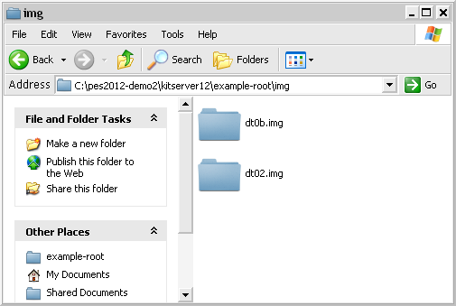
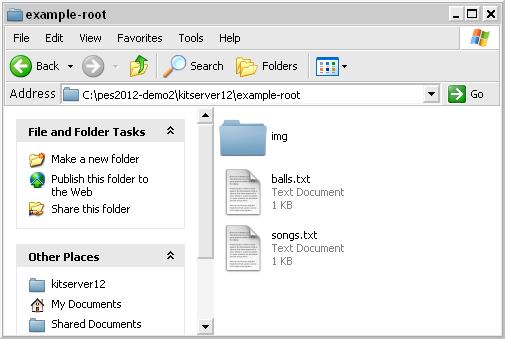
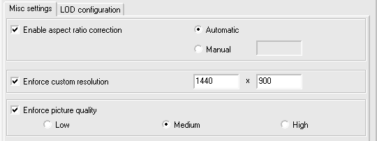
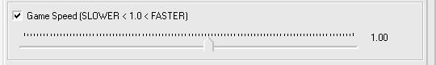

Usually, the most up-to-date version of this documentation, and the translations to many languages, are located here: http://kitserver.ath.cx/docs/. Documentation for Kitservers 5-8 and Kitserver 2010/11 can also be found there.

Kitserver 12 is an add-on program for Pro Evolution Soccer 2012 and Pro Evolution Soccer 2012 Demo/Demo2. It is a loader and manager for various modules, where
each module is built as a (typically) independent DLL containing logic to
enhance the game in particular aspect. While originally the Kitserver was
developed to "serve" kits for Pro Evolution Soccer 3, a lot more functionality
has been added over the years.
Below is a quick summary of the available features. Follow the link in the left column to get more details about a particular module.
If you are new to Kitserver, please make sure you read the installation instructions.
| AFS2FS 12.0.2 | afs2fs.dll | Manage AFS (.img) game content using files and folders: much easier and quicker to install/remove patches, without the need modify *.img files. |
|---|---|---|
| LOD Mixer 12.0.3 | lodmixer.dll | Misc visual tweaks, fine-tune LOD for players and referees. |
| Speeder module 11.1.0 | speeder.dll | Increase or decrease gameplay speed. |
Because of the nature of work that Kitserver does, it is advised that you install PES into a non-system folder. Instead of putting it into C:\Program Files\KONAMI\Pro Evolution Soccer (default location on XP), use a folder that you have full ownership and control over. For example, C:\Games\PES2012, or something like that. New Windows versions have hidden logic related to system folders like "Program Files", so it is best to avoid them and save yourself plenty of time and hair.
Unpack the archive (kitserver-12.x.x.zip) into some temporary folder.
You will see a folder called kitserver12. Copy this entire folder
into your game main folder, so it looks like the picture below.
That is it, you are done.
Uninstall is very easy: just delete the kitserver12 folder, when you no longer need it. Kitserver doesn't write into system folders, or anything of that sort, so removal is very simple.
In order for Kitserver features to work in the game, you need to "attach" the Kitserver to your game main executable (typically called pes2012.exe). To do that, go to kitserver11 folder, and run manager.exe. If you placed the files correctly during installation steps, then you will see manager showing you the list of game executables that you can Attach/Detach kitserver to. Click [Attach] button, and wait for the manager to confirm that the attachment was successful. Now go one level up in the folder hierarchy and double-click on the game exe (to which you just attached the kitserver) and the game should start.
Note that you do not need to attach the kitserver every time you start the game - you only need to do it once. Once attached, it stays that way, until you detach it.

You can always run the game without Kitserver. To do so, you will need to Detach the kitserver from the game exe. (You can always re-attach later again). Run manager.exe, select the correct exe, and click [Detach] button. Wait for the manager to confirm that it had successfully detached kitserver. Now run the game exe, and Kitserver will no longer be loaded.
This is handy for troubleshooting crashes, for example. Things go wrong no matter what, so the first thing you'd want to do is to isolate a problem. You will want to know if the Kitserver is causing a crash, or if something else is at fault. Launching the game without Kitserver is a good first step to see what's causing the issue.
Kitserver uses a file called config.txt as its main configuration file. A lot of things are specified there, including which modules to load, what settings those modules should use, and etc. Here is an example of what can be in config.txt:
[afs2fs] img.dir = "c:\mypesfiles\root1" [kload] dll = afs2fs dll = speeder dll = lodmixer [speeder] count.factor = 1.0
Each module can have its own configuration section, which starts with [module-name], and typically has one or more options following it. Now, normally you wouldn't need to modify config.txt file, except for the cases, when you need to modify the behaviour of a particular module (DLL), or enable/disable such DLL.
To disable a particular module - just comment out the corresponding line in the [kload] section by putting a '#' symbol at the beginning. (Or you can delete that line altogether.)
Formerly known as lodcfg.exe (it used to be the GUI tool for LOD mixer only, but now it covers other configuration options as well), this simple GUI program allows to modify some configuration settings in config.txt. It's a helper tool and all that it does, you can also do manually, by editing config.txt in your favourite text editor. In fact, some things you can only do manually - like adding and removing modules (DLLs). But for simple things - like changing game speed or fine-tuning the LOD levels, it's faster and easier to just launch config.exe, quickly adjust things, then click [Save] button, and you're done.

This module allows to organize your BIN-files into folders on disk, instead of inserting them into AFS(*.img) files, which is sometimes a pain, and may require a lot of extra disk space.
Several people over the last few years had suggested similar solutions, but ultimately it was Str@teG who kept talking about this idea of organizing BINs into folders, and eventually i decided to just go ahead and do it. So now this is realized in the this module - afs2fs.dll. From personal experience, i know that people are sometimes reluctant to install big patches that require an AFS-rebuild, not because it's particularly difficult or anything, but because it can be time-consuming and disk-space-hungry. With afs2fs, this is now very easy: you just put the BIN into correct folder and that's it. And, of course, there are no size constraints - the bins can be as large as needed!
The module is also handy, when you want to try a patch without risking totally destroying the content that you already have. Putting a new patch into a separate AFS-root and modifying config.txt is all you need to get it going. Removal as easy too: delete the correspoding "img.dir" line in config.txt, and then delete the AFS-root folder. Multiple patches is no longer a management nightmare :). (See more info on AFS-roots in the sections below)
Start by choosing a location where you would be putting your files. For example, let's take c:\mypesfiles\root1. This will be your so-called AFS-root. Inside that folder, create a folder called img. (This is very important that you have the folder named "img", since the game relies on particular names). Then, inside img, create folders, as needed, named - dt00.img, dt01.img, dt0b.img, and so for. That's where you're going to be putting the BIN-files.
It's important to name the folders correctly: a folder must have exactly the same name as the corresponding AFS-file. For instance, if you call a folder dt00, instead of dt00.img, things will not work.
This is how my img folder looks: 
In general, you can name the files whichever way you want, but you must follow one rule: there must be a BIN number in the name, and it must be preceded by an underscore character ('_'). Also, the filenames CANNOT be longer than 63 characters.
Examples of correctly named files:
unknown_317.bin
goalnet_41.bin
ball_11.bin
unknow_11 (.bin extension is optional)
music_23.adx (a file can have a different extension: .adx is typically used for music and sound files)
Examples of incorrectly named files:
unnamed10.bin - no underscore symbol before the BIN number.
face.bin - no BIN number.
By default, the AFS2FS module will not search any "special" default paths. Instead you must specify your AFS roots explicitly: In [afs2fs] section of config.txt, you can speficy the location of your root, which can be anywhere on your hard disk. You can also have multiple roots, which is very useful if you have several patches, and you don't want to lose track of which BINs came from which patches (so that you can easily uninstall a patch by just deleting its root folder).
Here is an example with 3 different roots are configured:
[afs2fs] img.dir = "c:\mypesfiles\root1" img.dir = "example-root" img.dir = "patch-RPL"
The order of the roots is significant, when it comes to resolving "collisions". Say, you have a dt0b.img/ball_11.bin in the second root (example-root), and dt0b.img/superball_11.bin in the third root (patch-RPL). Even though the files are actually named differently, they intend to replace the same BIN - #9 from dt0b.img, and therefore we have a "collision". The rule is simple: the lower root in the list wins. Which means that in this situation, the dt0b.img/superball_11.bin file will be used, since its root is listed last in the [afs2fs] section.
IMPORTANT thing to remember: The root is the folder that contains "img", not the "img" folder itself. In other words, if the full pathname is c:\mypesfiles\root1\img", then in the config.txt you should have: img.dir = "c:\mypesfiles\root1"
When replacing songs with AFS2FS, it is also possible to change the title of the song and the artist's name, by using a songs.txt map-file, which should be put into afs-root folder.
Here's an example of such songs.txt file:
# Song names map # Format: <binId>, "<title>", "<artist>" # Note that double quotes are required. 22, "I'm mad about you", "Sting" 23, "Вне зоны доступа", "Город 312"
IMPORTANT: as with all other map-files and config files that Kitserver uses, the encoding of the file needs to be Utf-8 or Unicode, especially of you use non-latin symbols - like in the example above. (ANSI encoding is ok if you only use Latin-1 characters.)
Similarly with balls, if you are replacing ball BINs, you probably want to adjust their names too. One easy way to do that is to use a balls.txt map-file, which should be put into afs-root folder:
# Ball names map # Format: <ball-number>, "<name>" # Note that double quotes are required. # (Ball numbers go from 1 to 16) 8, "Nike-ball Blue" 9, "Мячик плохонький"
It is worth noting that each afs-root folder can have its own songs.txt and balls.txt. Since each afs-root may contain music files and ball files, it makes sense to tie the names to them this way. If you have multiple afs-roots(as when for example you have multiple patches, and each patch uses its own afs-root), then the "conflicts" are resolved the same way as they are with BINs (see above for details). In other words, if one afs-root has name for song 11, and another afs-root has a name for song 11, then whichever afs-root is specified lower in the list (in config.txt) - will win.
Here's a picture to clarify where songs.txt and balls.txt files should be placed. In this case "root1" is my afs-root: 
LOD-Mixer is the module that allows to fine-tune some aspects of PES2011 graphics engine.
These settings can be configured manually in kitserver's main
configuration file (kitserver/config.txt), but it is probably easier
to use Kitserver's configuration tool
(config.exe).

Many LCD monitors are neither 4:3 nor 16:9. Often, a 16:10 ratio is used, or even 16:9.6. This results in the picture being distored: players either too fat or too skinny, and ball is not round. In this year version, Konami are again using the black bars (as in PES2009 and PES2010) to compensate for the case when aspect-ratio is different (LB checkbox). However, if you don't like the black bars, then run settings.exe, turn off the LB checkbox, and then use Kitserver's aspect-ratio correction feature instead:
With LOD Mixer, you can set the aspect ratio to whatever you want. Either let LOD Mixer calculate it automatically - at run-time, using the current screen width and height in pixels - or set the value manually. Automatic way would work quite accurately, assuming the pixel is square. Sometimes, however, you would want to set it manually. For example, i play on widescreen monitor, but using a 800x600 resolution, because my video card is not powerful enough. The automatic calculation would give 4:3, but since the view is stretched to fill the entire screen, we need to account for that. Setting aspect ratio to 1.6 (which is a natural AR for my laptop) does the trick.
You can set any screen resolution you want, if you play in a Windowed mode. Even crazy screens like 1234x487 will work, but you're likely to suffer from performance problems on such cases. Hidden fullscreen resolutions are fully unlocked now as well. However, only those that your video card really supports in full-screen mode, will work. If you accidently choose an unsupported fullscreen resolution, then PES should still be able to start in a window.
Although this is now a rare case, there are still situations, where the game (and the settings.exe) do not correctly analyze the capability of the video card, and because of that can erroneously disable "Medium" and "High" picture quality settings.
If you are a "lucky" one with a card like that, LOD mixer can help you play with a better picture quality. Selecting one of the settings - Low, Medium, or High - will override the choice made in settings.exe, and will also disable any video compatibility checks that the game makes. Therefore, be careful with this feature: if you video card does NOT indeed support the chosen picture quality, the game will most likely crash or exit abnormally.
LOD (Level-Of-Detail) algorithms are used in graphics engines to improve both the picture quality and the speed of rendering, when drawing objects at various distances from the viewer. The basic idea is that when the object is close to the camera, one (very detailed) model is used. When it is far - another, simpler model with less detail is used instead. It's much faster to render a low-poly model of the object, and it typically looks better, when drawn in small size, because it suffers less from aliasing. In theory, at least, that is how it is supposed to work.
PES 2011 has 4 different ways it can render a player. The choice of the rendering used at any given moment depends on several circumstances: how far the player is from the camera, is this an active player (currently controlled by human), is this a gameplay rendering or a replay, and so for. Here's the picture that shows how these LODs differ visually:

Notice the S1, S2, S3 labels, which are placed among the four renderings. You can think of them as "switches" from one type of rendering to another. (For instance, S1 controls when the game engine switches from drawing a player at full detail to drawing the same player at slightly less detail.) This is what the S1,S2,S3 means that you see in the configuration tool UI.

Unfortunately, PES series had always suffered from an overly- conservative LOD configuration, where the switch to low-poly models would happen way too soon, and that would result in various visible artifacts. In PES4-PES6, examples were: balding players, and missing details on kits. In PES2008-PES2011, the players and referees appear to have blurred generic faces, once they move slightly away from the camera.
So, if you have a good PC and a powerful videocard with GPU cycles to spare, you may fancy tuning the LOD sligtly to make the game engine display more detailed models, even when they players are a bit away from the camera (Animation quality seems to be affected by this as well). To do that, move the sliders to the right.
Also, if on the contrary, your machine is struggling to run the game at a smooth frame rate, you can try moving the LOD sliders in the opposite direction - thus making the engine switch to the low-poly models sooner than normal. This may improve the framerate, although at the expense of picture quality. To achieve that, move the sliders to the left.
Configuring LOD well takes time and is best done via trial-and-error method. (If it were easy, it would've been probably done right in the first place!) I'd like to mention a couple of common errors and incorrect assumpltions that people often make:
Myth #1: if I move all sliders to the right,
I will always have the best picture.
That is simply not true. You will get the most detailed and expensive
rendering, yes, but NOT NECESSARILY the one that looks the best.
More-detailed objects at far distance actually look worse than
less-detailed ones, because of the aliasing effect.
Myth #2: my GPU (video card) is really good, surely it can handle anything thrown at it.
That is not true either. Current generation of games has become
quite sofisticiated and resource-hungry. GPU and CPU are working hard to
process the rendering, physics, AI logic. 60 FPS is the typical minimum
frame-rate at which a game needs to run, in order to provide nice and
smooth gameplay. That means the rendering of the entire scene must fit
into 1/60th of a second and still leave some time for other tasks to be
done. (Physics, in particular is often run at the same rate as rendering,
so that the picture doesn't suffer from noise.) To make sure rendering
time doesn't escalate dramatically as more objects are rendered, LOD is
often employed as an optimization technique. By moving all sliders to
the right, you are effectively disabling the LOD algorithm and telling
your GPU: "render all objects on the screen at the most possible detail.
And if you fry while doing that, i don't care!". Ok, so maybe it's
not a funny example, but you get the point.
Now, coming back to our game, as i said, in many cases, you only really need to adjust 1 slider or two to get the desired effect, and still keep the smooth frame-rate.
Not everyone is satisfied with the pace of the gameplay. It must be said that it is not an easy thing to get this aspect of simulating a football match correctly. Many factors are in play, and a lot depends on hardware. Personally, i think Konami did a decent job at that, but many folks find the gameplay too fast.
Several techniques of slowing the game down exist, and not one of them is perfect, but all work to some extent. The speeder module basically slows down the clock, sort of tricking the game into running slower. This is not an ideal solution either, but if a small adjustment is used, it can still look real, play well, and actually provide a smoother gameplay. Don't consider it a silver bullet though. It might work well for you, but it also may not deliver everything you had hoped for :) (One side-effect, for example, is that if you set your match time to 10 minutes, but you have the Game Speed set to 0.9, the actual match time will be approximately 11.1 minutes.)
It is possible to decrease the game speed and also to increase it. The value 1.0 gives the default unchanged speed. Less than 1.0 - slower gameplay, greater than 1.0 - faster gameplay. It is not advised to use values lower than 0.7, because the music/commentary starts to break up. Also values larger than 2.5 are not supported. It is already ridiculously fast with 2.5!.
Use configuration tool to adjust the game speed:

You can also set the game speed adjustment manually in config.txt, by using count.factor setting:
[speeder] count.factor = 0.95
Programming: juce and Robbie
with contributions from Stelios
Beta-testing: members and guests of Evo-Web and PesWe.com forums
Kitserver 12 logo: by Ariel
Kitserver license is BSD-style license that can be found here: license.txt